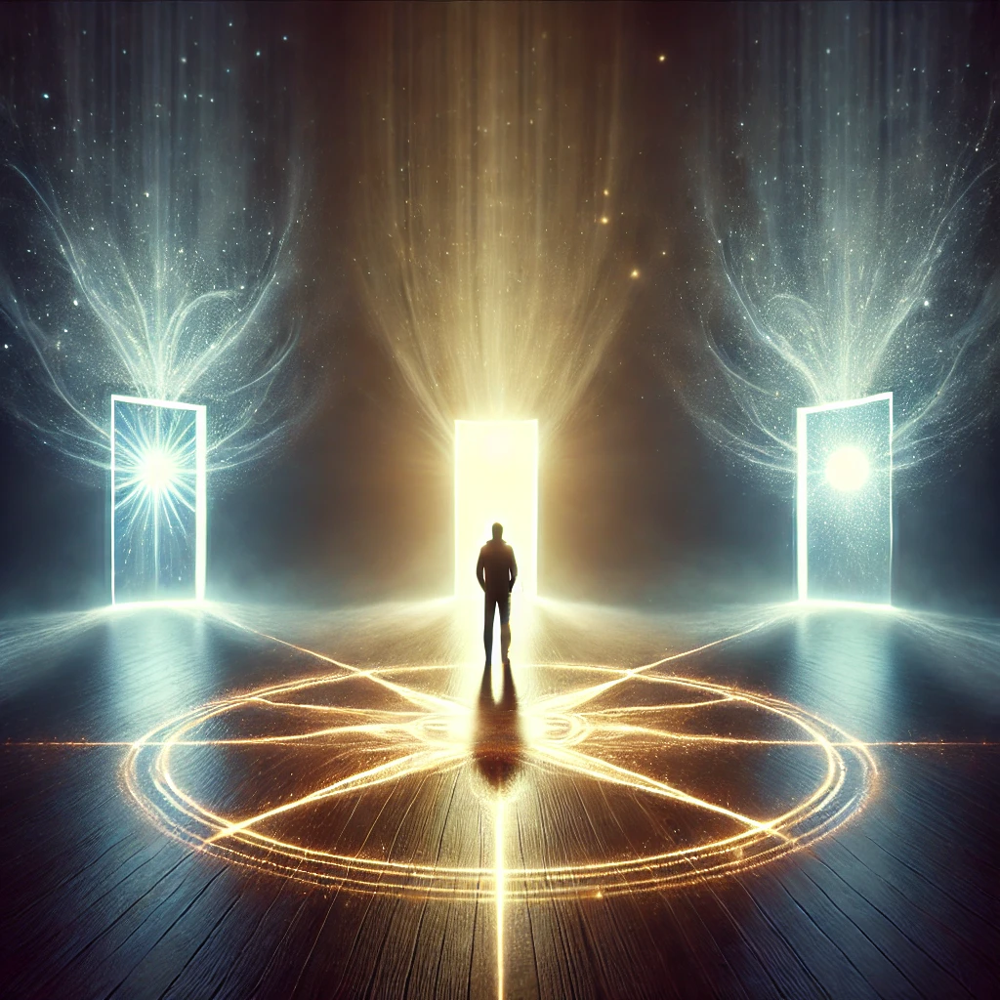

The air around you is filled with possibility, a quiet hum of potential stretching out before you like an unwritten story. The compass in your hand pulses gently, pointing not to a specific direction but to the infinite choices that lie ahead. You stand at a crossroads, each path leading to a different future.
Closing your eyes, you let your mind wander into the unknown, imagining what could be. Visions flicker in your mind—some bright and hopeful, others shadowed with uncertainty. The voice of the unseen speaks, steady and encouraging:
“The future is not fixed, but shaped by intention and choice. What you envision becomes your reality. What will you create?”
Before you appear three glowing doorways, each representing a different way to shape what lies ahead.

Which vision of the future will you explore?